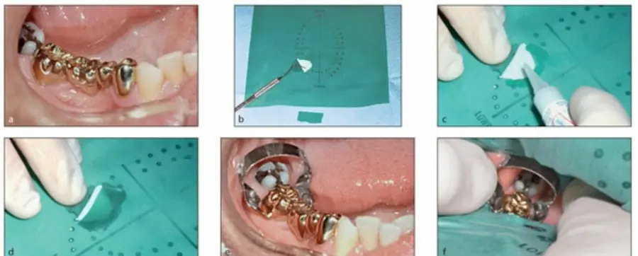
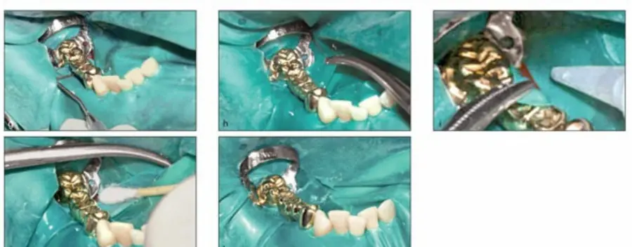

نسخه استخراجشده؛ ترجمه یا تأیید علمی انجام نشده است. وضعیت: captured
برای ترمیم کلاس II دیستال پرمولر اول پایین، باید دستکم یک دندان دیستالتر را هم ایزوله کنی. ولی از پرمولر دوم تا مولر دوم بریج سهواحدی است. دانشجو برای هر دندان یک سوراخ جدا زده و حالا سپتوم میان پایه و پانتیک از هیچ راهی پایین نمیرود. چه باید میکرد؟

در بریج، پایه و پانتیک با کانکتور یکپارچهاند. تماسی نیست که سپتوم از آن رد شود، و پانتیک گردنی ندارد که لبهی سوراخ دورش سیل کند. پس روش معمول، یعنی یک سوراخ برای هر دندان و رد کردن سپتومها از تماس، اینجا کار نمیکند.
این روش برای بریج سهواحدی و دندانهای اسپلینتشده است.

برای رد کردن نخ از زیر پانتیک، از نخگذر (floss threader) کمک بگیر؛ همان وسیلهای که بیمار برای تمیز کردن زیر پانتیک دارد. اگر نخ بخیه است، سوزنش را کُند کن و نخ را با آن رد کن.
نکتهی طلایی: پیش از پانچ، پایهها و پانتیک را در دهان مشخص کن و روش را همانجا برگزین؛ جای سوراخها به روش بستگی دارد.